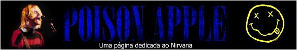

Bem vindo à Poison
Apple! Nesse site dedicado ao Nirvana você encontrará um pouco
de tudo em relação à banda, desde biografias, fotos,
Mp3, entre outras coisas. O site é inteiro em Português. A
página ainda está em uma fase inicial, portanto nem todos
os links levarão ao lugar desejado. Com o tempo irei atualizando
até conseguir terminá- la por completo. Provavelmente também
farei uma página em inglês, mas isso virá por último.
Por enquanto, vá olhando o que a página já tem a oferecer.
Volte sempre!
Atualizações
08/05/2000 - Atenção:
breve eu juntarei a minha página com mais dois amigos para ter uma
das melhroes páginas em português da Internet, com uma infinidade
de informações e muitos shows completos em Mp3.
05/05/2000 - Ando
meio sem tempo para mexer no site. Há apenas uma pequena atualização
na sessão de Bootlegs. Por favor troquem cds comigo!!! Logo eu terei
mais algum show completo!!
15/04/2000
- Várias atualizações nas sessões Jornais,
Revistas, A Morte De Kurt, Sessões De Gravação, Seattle,
Outras, Letras, e Fotos. O 'Mapa Do Site' foi refeito, com mais informações.
08/04/2000-
Foram postas as mp3 do bootleg "Trick Or Treat". Estou procurando bootlegs
do Nirvana! Se alguém tiver algum, me contate!!
Antigas atualizações?
Veja aqui
Para ver
melhor esse site, use uma resolução de 800 x 600. Pegue também
a fonte principal do meu site, a Tahoma.
Esse site foi feito por Eduardo Zulian ©1999. Todos os direitos reservados.
Por favor, não pegue nada dessa página. Se quiser fazer um
link para sua página, me pergunte primeiro, no poison.apple@nirvanafan.com
. Meu UIN, no ICQ é 16068201. Use-o também para fazer
alguma pergunta ou para apenas conversar comigo.
 Este site pertence a Eduardo
Zulian - Poison Apple©1999
Todos os direitos reservados
Este site pertence a Eduardo
Zulian - Poison Apple©1999
Todos os direitos reservados